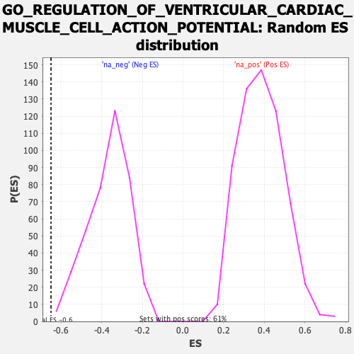

| | | Dataset | PFS |
| Phenotype | NoPhenotypeAvailable |
| Upregulated in class | na_neg |
| GeneSet | GO_REGULATION_OF_VENTRICULAR_CARDIAC_MUSCLE_CELL_ACTION_POTENTIAL |
| Enrichment Score (ES) | -0.6494698 |
| Normalized Enrichment Score (NES) | -1.7837176 |
| Nominal p-value | 0.005063291 |
| FDR q-value | 0.50291973 |
| FWER p-Value | 1.0 |
Table: GSEA Results Summary
Fig 1: Enrichment plot: GO_REGULATION_OF_VENTRICULAR_CARDIAC_MUSCLE_CELL_ACTION_POTENTIAL
Profile of the Running ES Score & Positions of GeneSet Members on the Rank Ordered List
| SYMBOL | RANK IN GENE LIST | RANK METRIC SCORE | RUNNING ES | CORE ENRICHMENT | | 1 | PKP2 | 5669 | 0.783 | -0.2488 | No |
| 2 | RNF207 | 6870 | 0.572 | -0.2797 | No |
| 3 | CTNNA3 | 7949 | 0.399 | -0.3137 | No |
| 4 | DSG2 | 12114 | -0.201 | -0.5164 | No |
| 5 | JUP | 12862 | -0.319 | -0.5376 | No |
| 6 | BIN1 | 13113 | -0.364 | -0.5310 | No |
| 7 | DSP | 13270 | -0.387 | -0.5183 | No |
| 8 | DLG1 | 13468 | -0.421 | -0.5059 | No |
| 9 | CAV1 | 13977 | -0.512 | -0.5046 | No |
| 10 | KCNE3 | 15632 | -0.872 | -0.5428 | No |
| 11 | NOS1AP | 17715 | -1.680 | -0.5597 | Yes |
| 12 | CACNA1C | 17770 | -1.715 | -0.4709 | Yes |
| 13 | TRPM4 | 18682 | -2.491 | -0.3845 | Yes |
| 14 | RYR2 | 18828 | -2.669 | -0.2493 | Yes |
| 15 | DSC2 | 19455 | -5.334 | 0.0035 | Yes |
Table: GSEA details [plain text format]

Fig 2: GO_REGULATION_OF_VENTRICULAR_CARDIAC_MUSCLE_CELL_ACTION_POTENTIAL: Random ES distribution
Gene set null distribution of ES for GO_REGULATION_OF_VENTRICULAR_CARDIAC_MUSCLE_CELL_ACTION_POTENTIAL